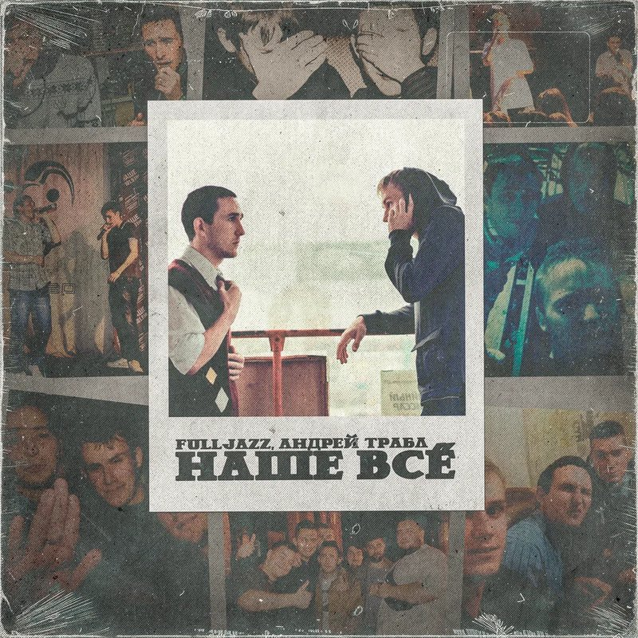

Андрей Трабл, FullJazz
Наше всё
Текст: Андрей Трабл, FullJazz
Музыка, запись, сведение, мастеринг, обложка: Андрей Трабл
Мы на биты залетаем, как ФБК в казематы. Дарили песенки заям поромантичней Синатры. Миру плевать на нас. Нам тоже плевать стало – пусть игнорит. Во дела: фанатки наши выросли на Постиноре. В закат цвета недель бессонных приветик отправил. По классике: тошнит от снобов и от правил. Ща обмяк котяра, давно стал домашним – окольцован, но районы до сих пор хором цитируют Жильцова. Планета крутится, как некий самолет над Минском. Андрюха наколдует звук: на фитах синий Винстон. Слова труднее подбирать, когда слегка за тридцать. Известный факт: мы – неизвестные артисты. Студия – Азкабан, в ней заперты почище Блэка. Рэпера ваши до сих пор просятся к нам на бэки. Их треки вырублю, уж слишком приторно. В тишине слушаю под ребрами биток с неровной ритмикой. Годы мчатся куда-то, сшибая столбы, и, цепляясь за них, нас куда-то несёт. Была цель – навсегда уходить толпы, только в соло по-прежнему также трясёт. Лёгким взмахом руки убирается пыль, плёнка пишет, но только кого, режиссёр? Может, проще совсем оставаться слепым, и не видеть, что бит и тексток – наше всё. Сколько вёсен и осеней? Наверное, дюжина. Сколько раз я забросил, столько же меня завьюжило. Спрыгнул с печи, покинув тишину, а зря, ведь я могу случайно разбудить и сына, и жену. Двенадцать лет я каждый год на промежутки резал даты. Я делаю выводы, хотя необходимо – результаты. В этой схеме чё-то не так – это всё мелочи, но я даже не думал, что я разменяю четвертак. И так который год я вижу, как без плавников и жабр, задыхаясь, топится когда-то мной любимый жанр. Я словно чуял, что сожрут, если я опоздав, прыгну в сомнительный маршрут, ведь тут не ждут такой состав. Мне постоянно вяжут петельки под притолокой. Ты либо с ними, либо обними, только душу не вытолкай. Я все эти двенадцать лет из двадцати пяти слышу под рёбрами биток с неровной ритмикой. Годы мчатся куда-то, сшибая столбы, и, цепляясь за них, нас куда-то несёт. Была цель – навсегда уходить толпы, только в соло по-прежнему также трясёт. Лёгким взмахом руки убирается пыль, плёнка пишет, но только кого, режиссёр? Может, проще совсем оставаться слепым, и не видеть, что бит и тексток – наше всё.